Business Card Organizer
January 2020Problem
It’s a pain when you forget your business cards whether during or after a networking event. Business Card Organizer solves this problem.
Context
A project with Lambda University. The goal was to better understand the UX process and tools needed to deliver a desirable product.
Objective
Over 4 weeks, I was responsible for the UX design of Business Card Organizer. I gave my research and wire frames to the dev team.
Research
Persona
According to the Problem statement, I put together what a typical user would look like for our product.This individual was highly extroverted, and would frequently visit networking events.
Competitive Research
I researched 6 companies that sought to solve this same issue. I downloaded each app and did some usability testing. I discovered most were difficult to use, and non-intuitive. I wanted to create an app that had a great onboarding process, and was easily understood.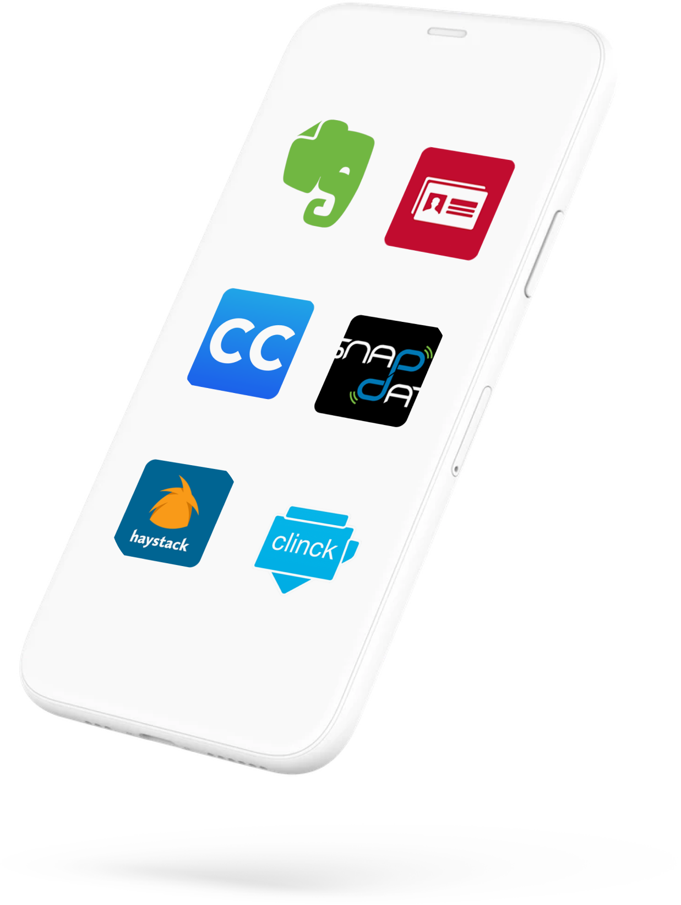
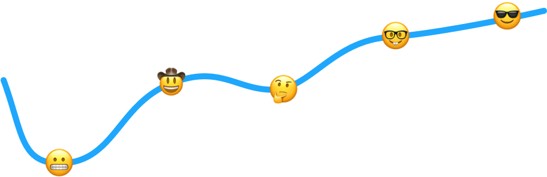
Journey Map
I thought about how someone would discover and use the app. Looking at pain points that could be fixed. For example, trying to connect with someone who does not have the app? Being able to share an e-card with a non app user is essential.Inverviews
Interviews helped me understand real expectations and wants for a business card app. An interviewee explained that the app could provide certain features that a physical card could not. Such as a link to a relevant case study.Ideation
Affinity Map
After interviews, I organized concerns and wants through an affinity map. I categorized these trends into similar groupings to see what problems should be solved.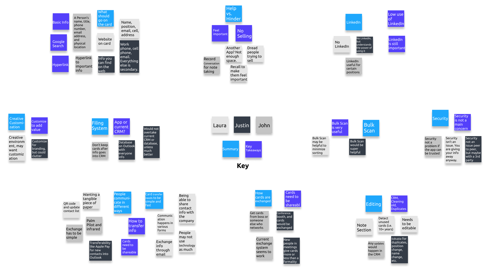
Mind Map
I then did a mind mapping brainstorm session. I thought about all the features that could solve app problems, and the solutions. I did not hold back and all thoughts were written down.User Flows
Once I knew the features I would include in the app, I created user flows which showed how someone would interact with the app doing specific actions. This was the start to my site map.Crazy 8’s
I did a crazy 8’s exercise. With a minute to sketch one screen eight times, I put my ideas to the paper. Ideating what the screens could actually look like was the starting point to creating wire frames.
Wireframing
Low Fidelity
My lo-fi rendering was a rough idea of what could be. It depicted the four main screens from the site map.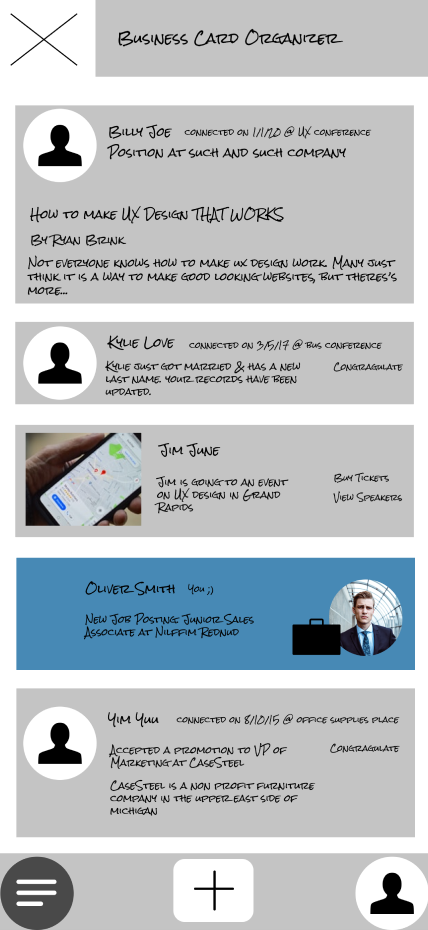
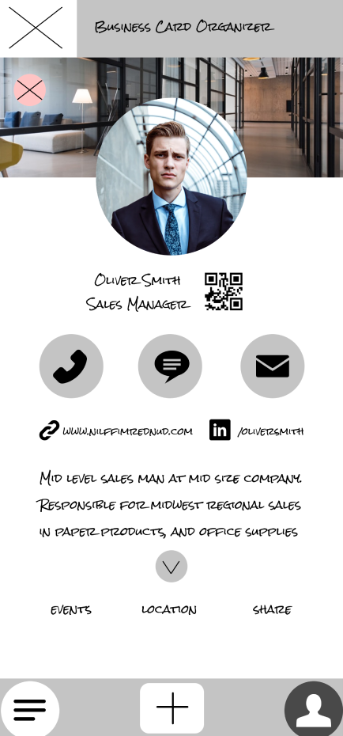
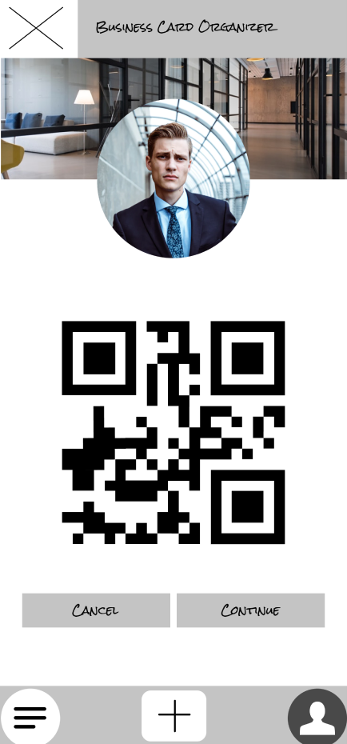
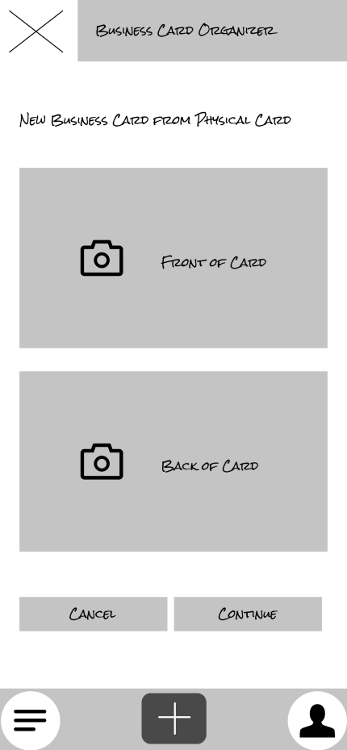
Mid Fidelity
I had many mid fidelity renderings. Each better than the last. Usability testing helped out significantly here.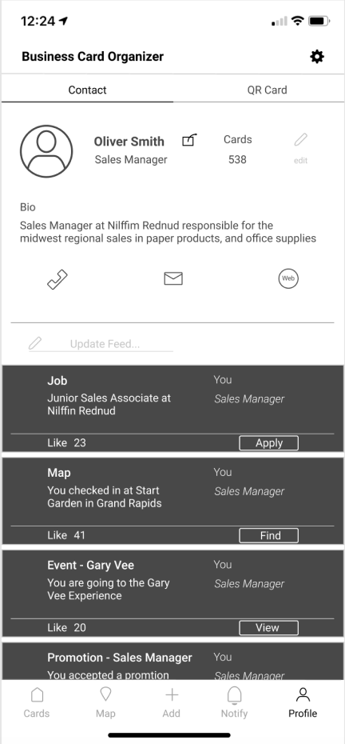
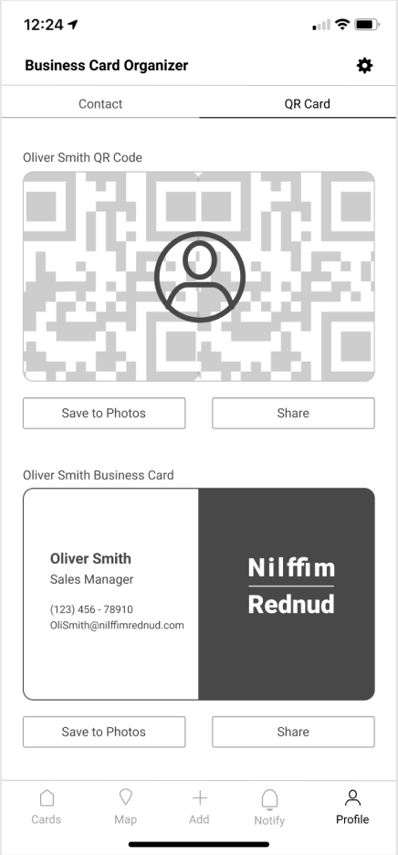
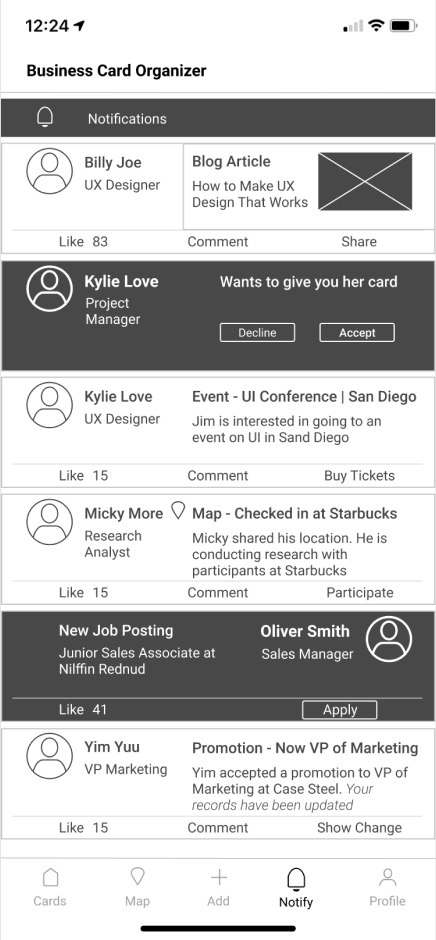
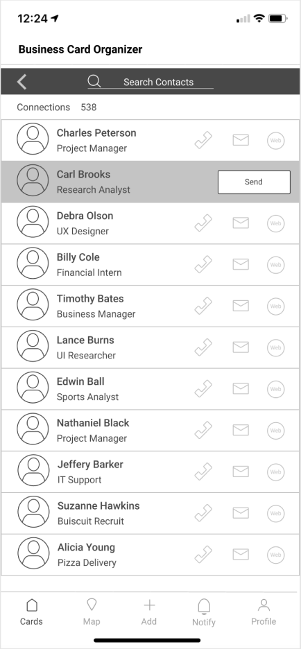
The “Home” tab was changed to “Cards”. The copy helped the user understand the function better.
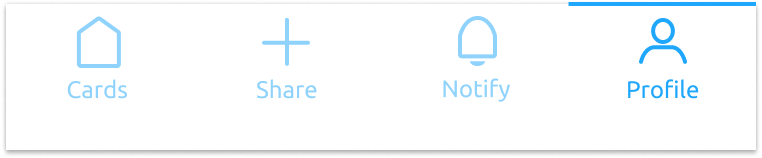
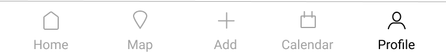
The calendar section had been deemed confusing and not important enough to keep. Users preferred using their own calendar. That section was replaced by the “Notify” tab where users would receive any updates to e-cards in their network.
High Fidelity
I introduced color and a specific type font. I added these to my style guide which provided easy access to updating all of my wire frames.Users would be notified of any change to their contact list to ensure they had the lastest contact information
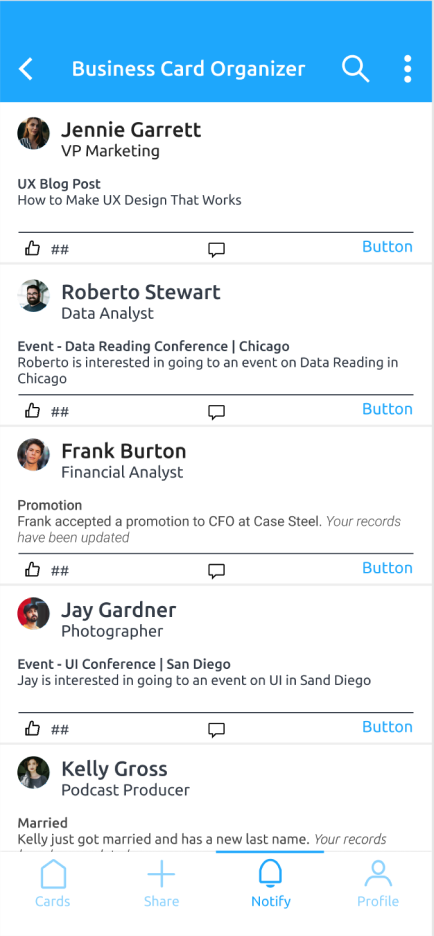
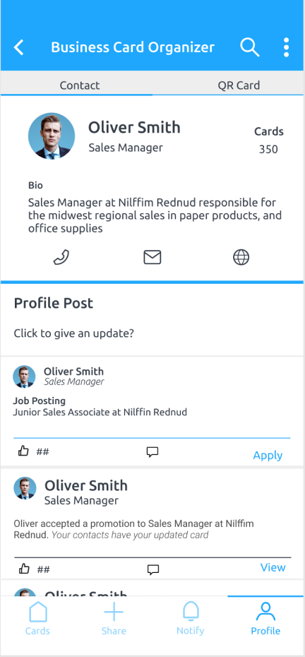
This displays a formal business card that can be shared or saved to the camera roll
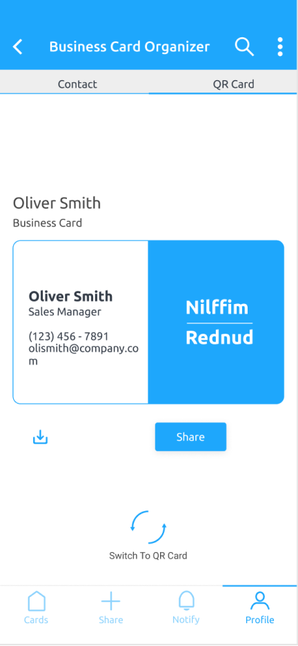
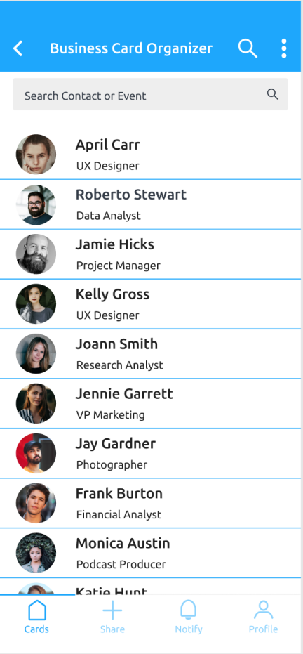
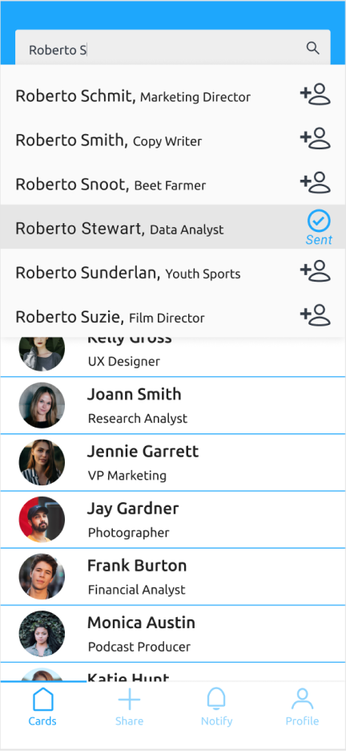
All contact cards are organized in an easy-to-use list. Also, available is to search and invite others to connect who are also using BCO
This card facilitates easy sharability between networkers
Cards can be scanned and the new contact information added to the contact list
I reduced the amount of color so that the color provided more value when used. Most notably, I reduced the amount of color for the bottom navigation section and gave the tab in use an additional color indication.
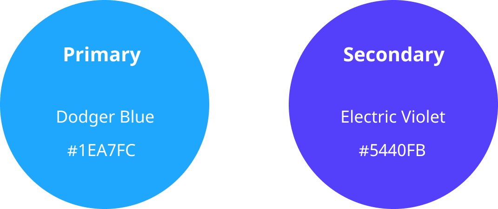
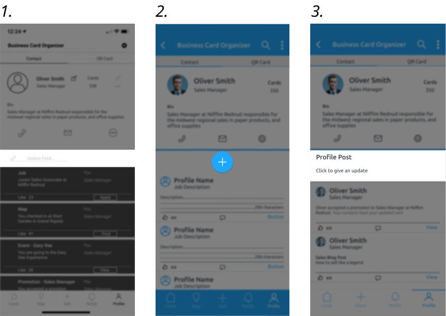
- Users needed a better way to update their feed, so a call to action saying “Update Feed...” was placed in the profile tab. However, there were problems with the affordance and users thought it was inactive, or completely missed it.
- I later changed “Update Feed...” to a floating plus sign. I thought it was simpler and cleaner, but was told it was confusing and ambiguous.
- I changed it again to an obvious call to action with a description that can’t be missed when viewing the profile tab. With a clear title, “Profile Post” and description “Click to give an update” users could find and use this feature.
Reiterations
Prototyping
I used Figma to connect my wire frames together. This provided a prototype for usability tests. I also used Figma Mirror on my phone to see what the UI would actually look like.Usability Testing
Users were assigned tasks to complete. With each task they were asked to think out loud. This helped me better understand their thought process when making decisions.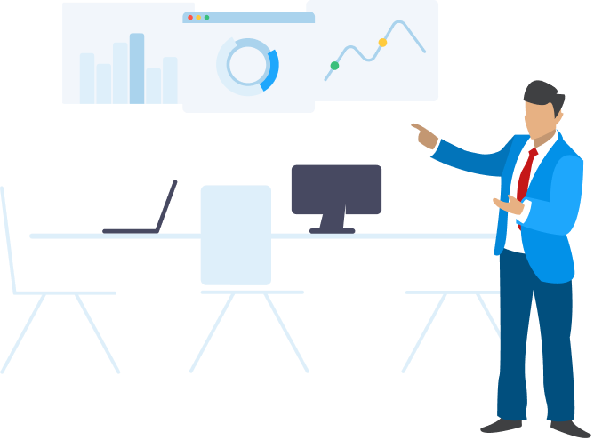
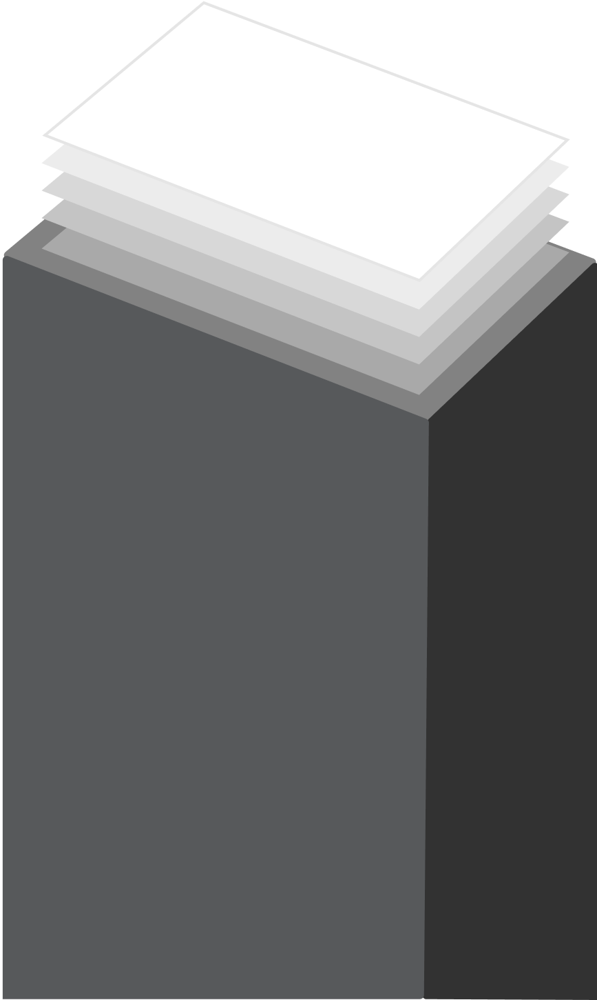
Making Changes
I made changes based on usability feedback, instructor comments, and researching similar apps.With each page and element, I asked myself about the purpose, what value it provided, and whether it was usable.
With any changes to the wire frames I also updated the user flows, sitemap, and style guide.
Hand off to Developers
Supporting Role
For the last week of the project, a team of developers is responsible for creating the app. I was responsible for providing the wire frames, explaining screens, user flows, and answering any questions that came up.
I organized my files for convenient use. A page for the sub team responsible for creating the landing or marketing page. MVP wire frames, user flows, site map, and responsive design pages for the react 1 & 2 development teams.
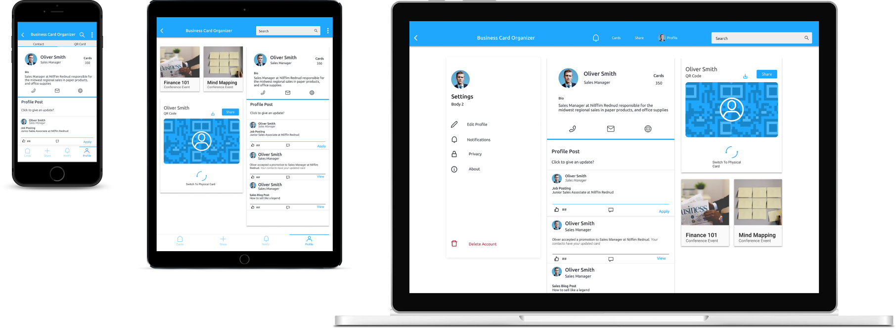